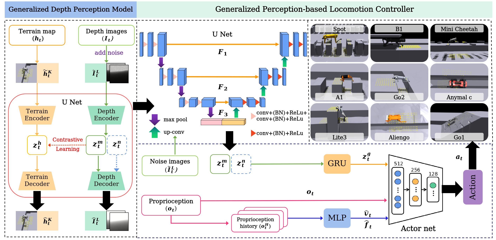
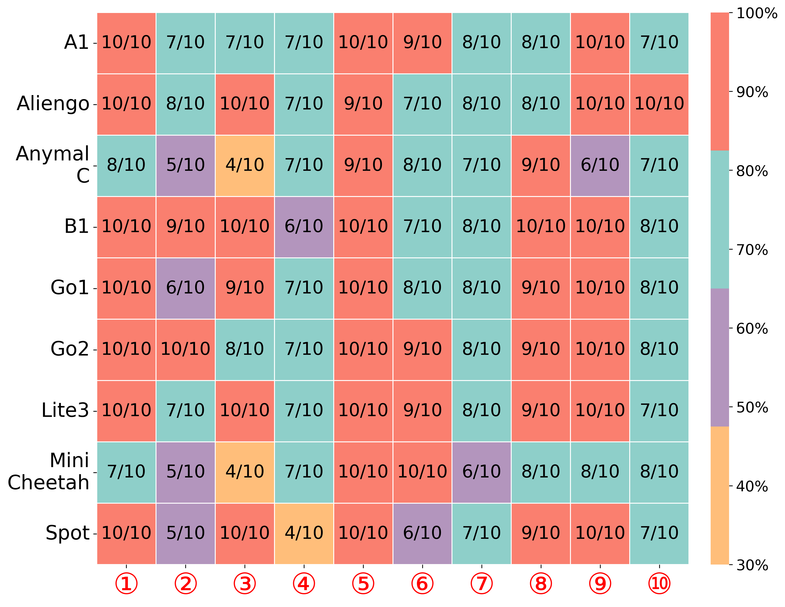
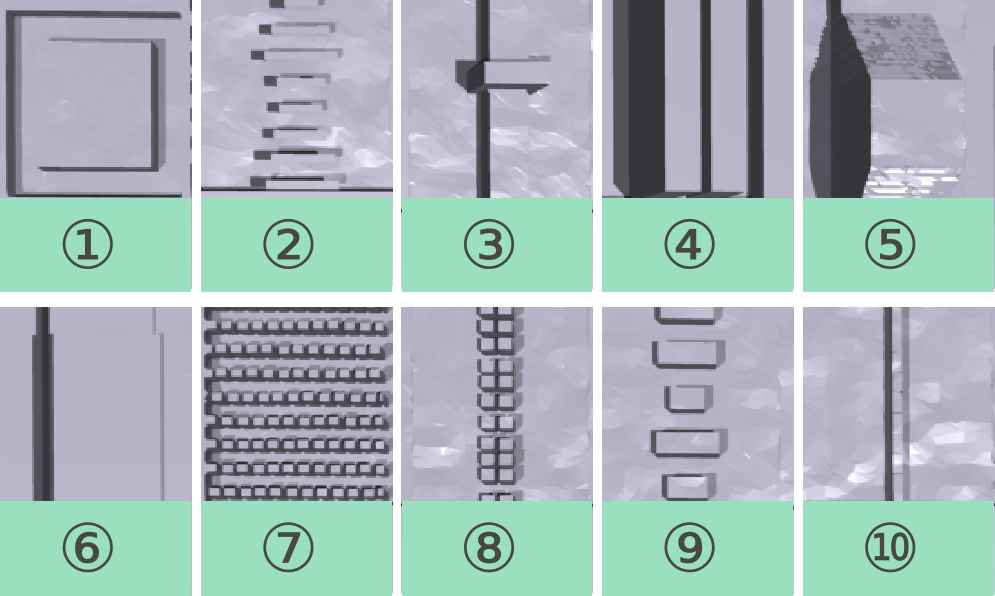
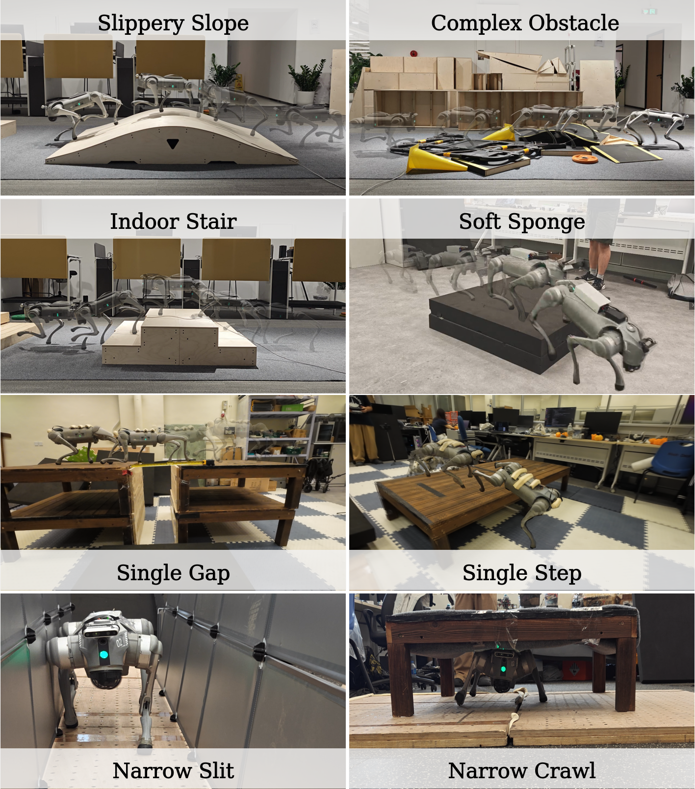
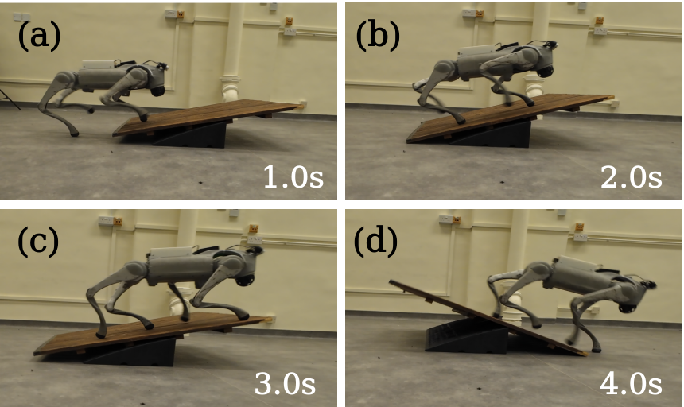

Perception-based Deep Reinforcement Learning (DRL) controllers demonstrate impressive performance on challenging terrains. However, existing controllers still face core limitations, struggling to achieve both terrain generality and platform transferability, and are constrained by high computational overhead and sensitivity to sensor noise. To address these challenges fundamentally, we propose a generalized control framework: Mastering a Generalized Contrastive Perception Model (MGDP). We utilize NVIDIA Warp to enable efficient parallel computation of depth images, thereby mitigating the inherent high computational cost. The core of MGDP is a contrastive learning mechanism that extracts highly generalized, low-dimensional terrain feature representations from multi-modal inputs (depth images and height maps). This process not only facilitates effective decoupling of perception from dynamics but also significantly reduces the memory footprint during training. Additionally, the framework integrates an explicit depth map denoising mechanism to enhance policy robustness against sensor artifacts. Furthermore, we design terrain-adaptive reward functions that modulate penalty strengths according to terrain characteristics, enabling the policy to acquire complex locomotion skills (e.g., climbing, jumping, crawling, squeezing) in a single training stage without relying on cumbersome distillation pipelines. Experimental results demonstrate that MGDP not only endows the policy with superior cross-terrain generalization capability but also enables fast and efficient fine-tuning across diverse quadruped robot morphologies via its pre-trained, dynamics-decoupled perception model. This vigorously promotes the development of unified, efficient, and generalized frameworks for quadrupedal locomotion control.

We evaluate the cross-morphology generalization of our method on 9 distinct quadruped robots: A1, B1, Go1, Go2, Lite3, Spot, Aliengo, ANYmal C, and Mini Cheetah. Despite significant differences in their physical dimensions and dynamic properties, our framework enables all of them to successfully traverse challenging terrains.
We evaluate the proposed MGDP framework on a diverse set of challenging terrains in simulation. The experiments cover various obstacle types, including discrete gaps, stepping stones, and continuous rough terrain. The results demonstrate that our method enables the quadruped robot to achieve robust and agile locomotion, effectively handling complex environmental features.


We conduct extensive real-world experiments to validate the robustness and generalization of the proposed MGDP framework. The policy is directly deployed on the physical robot to traverse various challenging terrains, including stairs, slopes, and outdoor unstructured environments, demonstrating successful sim-to-real transfer.

